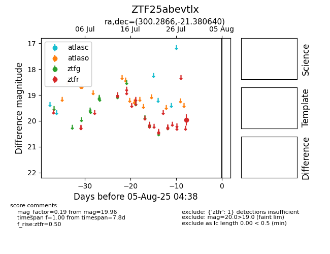

Target ZTF25abevtlx at 2025-08-05 04:38, see:
FINK: fink-portal.org/ZTF25abevtlx
Lasair: lasair-ztf.lsst.ac.uk/objects/ZTF25abevtlx
ALeRCE: alerce.online/object/ZTF25abevtlx
alt names
ZTF25abevtlx (ztf,fink)
coordinates:
equatorial (ra, dec) = (300.2866,-21.38064)
galactic (l, b) = (20.4117,-24.48376)
photometry
last ztfr=19.96
1 ztfr detections
